close all
clear functions
clear variables
dbstop if error
constants.fs = 44100;
constants.durationScale = 0.5;
constants.durationChord = 3;
delayS = constants.durationScale*10;
delayC = constants.durationChord*1.2;
[soundMajorScaleJust] = create_scale('Major','Just','A',constants);
[soundMajorScaleEqual] = create_scale('Major','Equal','A',constants);
[soundMinorScaleJust] = create_scale('Minor','Just','A',constants);
[soundMinorScaleEqual] = create_scale('Minor','Equal','A',constants);
disp('Playing the Just Tempered Major Scale');
soundsc(soundMajorScaleJust,constants.fs);
pause(delayS)
disp('Playing the Equal Tempered Major Scale');
soundsc(soundMajorScaleEqual,constants.fs);
pause(delayS)
disp('Playing the Just Tempered Minor Scale');
soundsc(soundMinorScaleJust,constants.fs);
pause(delayS)
disp('Playing the Equal Tempered Minor Scale');
soundsc(soundMinorScaleEqual,constants.fs);
pause(delayS)
fprintf('\n');
[soundHarmScaleJust] = create_scale('Harmonic','Just','A',constants);
[soundHarmScaleEqual] = create_scale('Harmonic','Equal','A',constants);
[soundMelScaleJust] = create_scale('Melodic','Just','A',constants);
[soundMelScaleEqual] = create_scale('Melodic','Equal','A',constants);
disp('Playing the Just Tempered Harmonic Scale');
soundsc(soundHarmScaleJust,constants.fs);
pause(delayS)
disp('Playing the Equal Tempered Harmonic Scale');
soundsc(soundHarmScaleEqual,constants.fs);
pause(delayS)
disp('Playing the Just Tempered Melodic Scale');
soundsc(soundMelScaleJust,constants.fs);
pause(delayS)
disp('Playing the Equal Tempered Melodic Scale');
soundsc(soundMelScaleEqual,constants.fs);
pause(delayS)
fprintf('\n');
Playing the Just Tempered Major Scale
Playing the Equal Tempered Major Scale
Playing the Just Tempered Minor Scale
Playing the Equal Tempered Minor Scale
Playing the Just Tempered Harmonic Scale
Playing the Equal Tempered Harmonic Scale
Playing the Just Tempered Melodic Scale
Playing the Equal Tempered Melodic Scale
fund = 'A';
[soundMajorChordJust] = create_chord('Major','Just',fund,constants);
[soundMajorChordEqual] = create_chord('Major','Equal',fund,constants);
[soundMinorChordJust] = create_chord('Minor','Just',fund,constants);
[soundMinorChordEqual] = create_chord('Minor','Equal',fund,constants);
disp('Playing the Just Tempered Major Chord');
soundsc(soundMajorChordJust,constants.fs);
pause(delayC)
disp('Playing the Equal Tempered Major Chord');
soundsc(soundMajorChordEqual,constants.fs);
pause(delayC)
disp('Playing the Just Tempered Minor Chord');
soundsc(soundMinorChordJust,constants.fs);
pause(delayC)
disp('Playing the Equal Tempered Minor Chord');
soundsc(soundMinorChordEqual,constants.fs);
pause(delayC)
fprintf('\n');
[soundPowerChordJust] = create_chord('Power','Just',fund,constants);
[soundPowerChordEqual] = create_chord('Power','Equal',fund,constants);
[soundSus2ChordJust] = create_chord('Sus2','Just',fund,constants);
[soundSus2ChordEqual] = create_chord('Sus2','Equal',fund,constants);
[soundSus4ChordJust] = create_chord('Sus4','Just',fund,constants);
[soundSus4ChordEqual] = create_chord('Sus4','Equal',fund,constants);
[soundDom7ChordJust] = create_chord('Dom7','Just',fund,constants);
[soundDom7ChordEqual] = create_chord('Dom7','Equal',fund,constants);
[soundMin7ChordJust] = create_chord('Min7','Just',fund,constants);
[soundMin7ChordEqual] = create_chord('Min7','Equal',fund,constants);
disp('Playing the Just Tempered Power Chord');
soundsc(soundPowerChordJust,constants.fs);
pause(delayC)
disp('Playing the Equal Tempered Power Chord');
soundsc(soundPowerChordEqual,constants.fs);
pause(delayC)
disp('Playing the Just Tempered Sus2 Chord');
soundsc(soundSus2ChordJust,constants.fs);
pause(delayC)
disp('Playing the Equal Tempered Sus2 Chord');
soundsc(soundSus2ChordEqual,constants.fs);
pause(delayC)
disp('Playing the Just Tempered Sus4 Chord');
soundsc(soundSus2ChordJust,constants.fs);
pause(delayC)
disp('Playing the Equal Tempered Sus4 Chord');
soundsc(soundSus2ChordEqual,constants.fs);
pause(delayC)
disp('Playing the Just Tempered Dom7 Chord');
soundsc(soundDom7ChordJust,constants.fs);
pause(delayC)
disp('Playing the Equal Tempered Dom7 Chord');
soundsc(soundDom7ChordEqual,constants.fs);
pause(delayC)
disp('Playing the Just Tempered Min7 Chord');
soundsc(soundMin7ChordJust,constants.fs);
pause(delayC)
disp('Playing the Equal Tempered Min7 Chord');
soundsc(soundMin7ChordEqual,constants.fs);
pause(delayC)
Playing the Just Tempered Major Chord
Playing the Equal Tempered Major Chord
Playing the Just Tempered Minor Chord
Playing the Equal Tempered Minor Chord
Playing the Just Tempered Power Chord
Playing the Equal Tempered Power Chord
Playing the Just Tempered Sus2 Chord
Playing the Equal Tempered Sus2 Chord
Playing the Just Tempered Sus4 Chord
Playing the Equal Tempered Sus4 Chord
Playing the Just Tempered Dom7 Chord
Playing the Equal Tempered Dom7 Chord
Playing the Just Tempered Min7 Chord
Playing the Equal Tempered Min7 Chord
fundFreq = 440;
samples = ceil(constants.fs/fundFreq);
n1 = 1:samples;
n10 = 1:(10*samples);
figure
plot(n1,soundMajorChordJust(n1),'Linewidth',2)
title('Major Chord Just: 1 Wavelength')
xlabel('Samples')
ylabel('Amplitude')
grid on
figure
plot(n1,soundMajorChordEqual(n1),'Linewidth',2)
title('Major Chord Equal: 1 Wavelength')
xlabel('Samples')
ylabel('Amplitude')
grid on
figure
plot(n1,soundMajorChordJust(n1),'Linewidth',2)
hold on
plot(n1,soundMajorChordEqual(n1),'Linewidth',2)
hold on
plot(n1,abs(soundMajorChordJust(n1)-soundMajorChordEqual(n1)),'Linewidth',2)
title('Major Chord Comparison: 1 Wavelength')
xlabel('Samples')
ylabel('Amplitude')
legend('Just','Equal','Absolute Diffrence')
grid on
figure
plot(n10,soundMajorChordJust(n10),'Linewidth',2)
title('Major Chord Just: 10 Wavelengths')
xlabel('Samples')
ylabel('Amplitude')
grid on
figure
plot(n10,soundMajorChordEqual(n10),'Linewidth',2)
title('Major Chord Equal: 10 Wavelengths')
xlabel('Samples')
ylabel('Amplitude')
grid on
figure
plot(n10,soundMajorChordJust(n10),'Linewidth',2)
hold on
plot(n10,soundMajorChordEqual(n10),'Linewidth',2)
hold on
plot(n10,abs(soundMajorChordJust(n10)-soundMajorChordEqual(n10)),'Linewidth',2)
title('Major Chord Comparison: 10 Wavelengths')
xlabel('Samples')
ylabel('Amplitude')
legend('Just','Equal','Absolute Diffrence')
grid on
figure
plot(n1,soundMinorChordJust(n1),'Linewidth',2)
title('Minor Chord Just: 1 Wavelength')
xlabel('Samples')
ylabel('Amplitude')
grid on
figure
plot(n1,soundMinorChordEqual(n1),'Linewidth',2)
title('Minor Chord Equal: 1 Wavelength')
xlabel('Samples')
ylabel('Amplitude')
grid on
figure
plot(n1,soundMinorChordJust(n1),'Linewidth',2)
hold on
plot(n1,soundMinorChordEqual(n1),'Linewidth',2)
hold on
plot(n1,abs(soundMinorChordJust(n1)-soundMinorChordEqual(n1)),'Linewidth',2)
title('Minor Chord Comparison: 1 Wavelength')
xlabel('Samples')
ylabel('Amplitude')
legend('Just','Equal','Absolute Diffrence')
grid on
figure
plot(n10,soundMinorChordJust(n10),'Linewidth',2)
title('Minor Chord Just: 10 Wavelengths')
xlabel('Samples')
ylabel('Amplitude')
grid on
figure
plot(n10,soundMinorChordEqual(n10),'Linewidth',2)
title('Minor Chord Equal: 10 Wavelengths')
xlabel('Samples')
ylabel('Amplitude')
grid on
figure
plot(n10,soundMinorChordJust(n10),'Linewidth',2)
hold on
plot(n10,soundMinorChordEqual(n10),'Linewidth',2)
hold on
plot(n10,abs(soundMinorChordJust(n10)-soundMinorChordEqual(n10)),'Linewidth',2)
title('Minor Chord Comparison: 10 Wavelengths')
xlabel('Samples')
ylabel('Amplitude')
legend('Just','Equal','Absolute Diffrence')
grid on
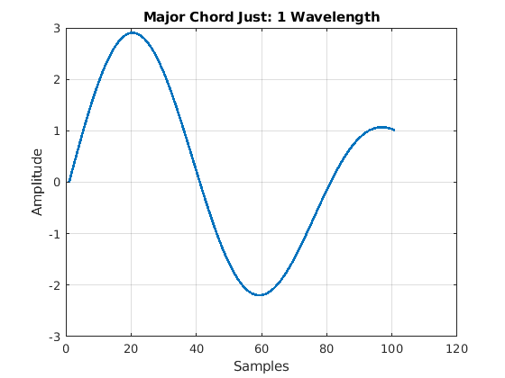 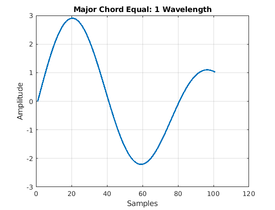 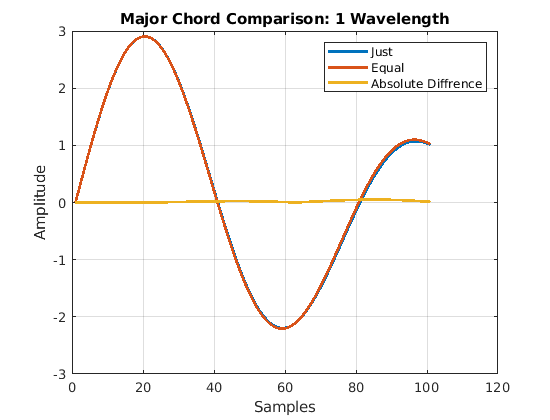 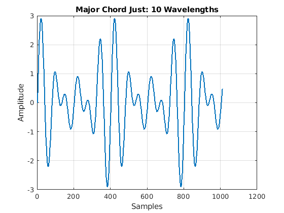 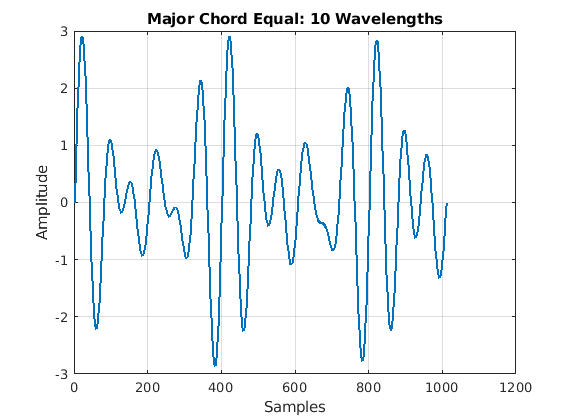 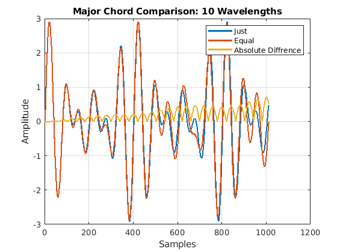 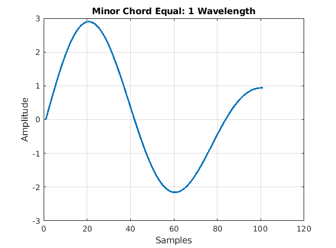 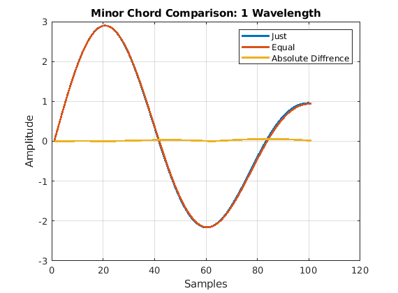 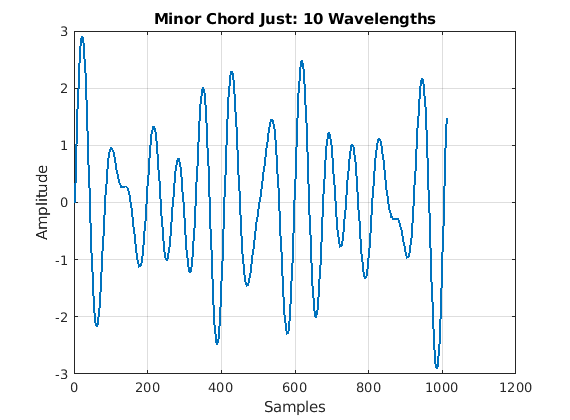 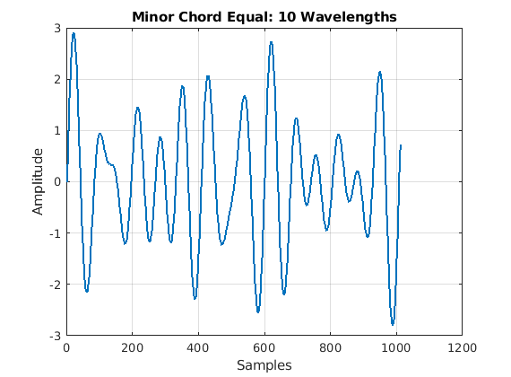 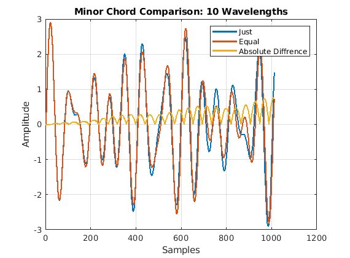